This codelab will walk you through how to set up an Ethereum wallet via your browser with Metamask as well as an account on the Security Innovation CTF. Throughout this sequence of codelabs, you may find you'd like more information about what is going on. For this, I would recommend visiting https://github.com/ethereumbook/ethereumbook/blob/develop/02intro.asciidoc or viewing the associated screencast lectures available from class.
What you'll learn
- Install and use Metamask in your browser
- Create a wallet on Ethereum's Ropsten network
- Create an account on the Security Innovation CTF
What you'll need
- Internet access
- Access to a supported Internet browser (Google Chrome, Firefox, or Brave)
- Go to https://metamask.io/
- Download and install the Metamask extension (Chrome)
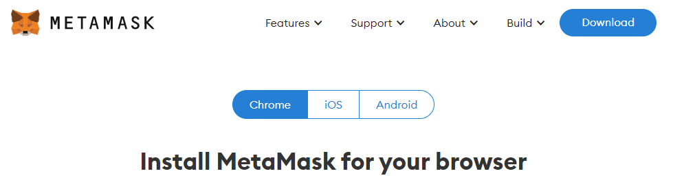
Follow instructions to create a wallet for use for the course (Do NOT use one that you use for actual Ethereum transactions)
- Open up the plug-in from the upper right corner of your browser and "Get Started" with Metamask
- Click on "Create a Wallet". If you already have a wallet from a different instance of Metamask, click on "Import Wallet" and enter your 12-word secret recovery phrase which represents the private key that is associated with your wallet's address.
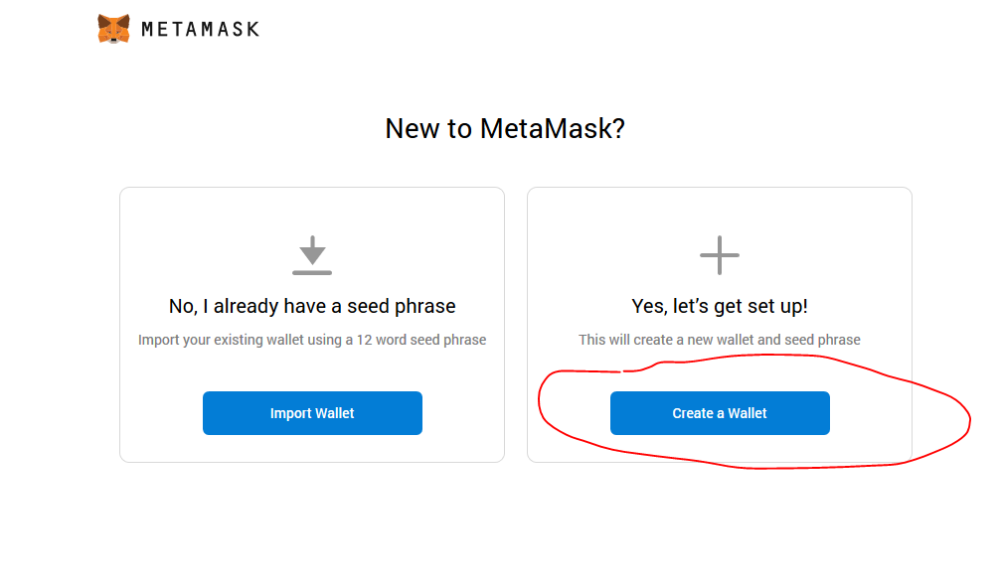
- Create a password for unlocking the wallet when you want to use it with a Web3 site that interfaces with one of the public blockchains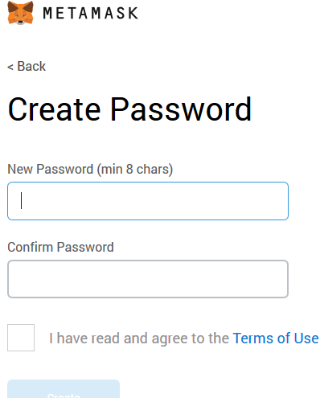
- Follow the steps to secure your wallet and record your "secret recovery phrase". This represents the private key for your wallet. If the computer that your wallet resides on dies and you have lost this phrase, your wallet funds are lost. If someone else gets your phrase, they can empty out your wallet. Fortunately, for the purposes of this course, we will only be using the test networks for our labs and not networks that require real $ so it won't matter if you lose it.
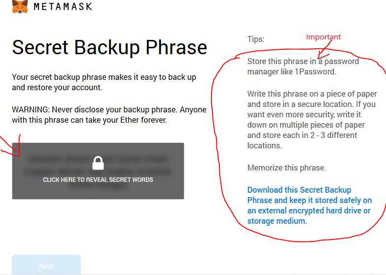
- Example
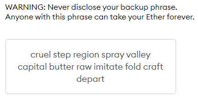
- Validate the phrase to ensure its correctness
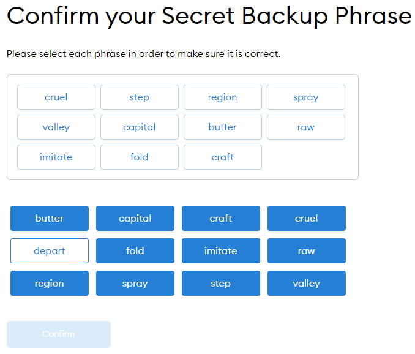
- Success!
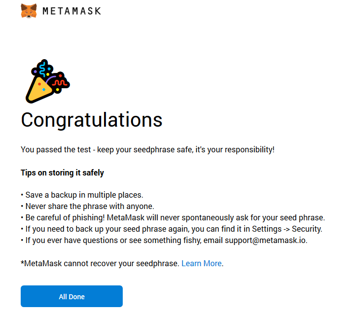
- Your recovery seed phrase can be used to move your wallet from browser to browser or from one machine to another. For CS students, we will go through this process in a subsequent lab in the course where we will transfer your wallet to an instance of an Ethereum light node that you will set up and run.
If you have managed to lose your secret recovery seed phrase, but still have access to the machine your wallet is on, you can log into the wallet and export it again. To do so, follow these instructions:
- Click on your account circle in upper right of the Metamask plug-in window, then click on "Settings" at the bottom
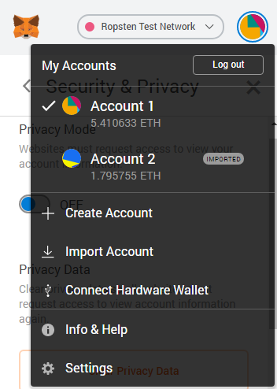
- Then, click on "Security & Privacy", then on "Reveal Seed Words"
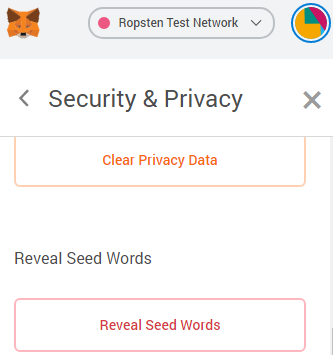
- Copy words to a safe place
- When you wish to move your wallet to a different machine or browser, you can go to Metamask on the target machine/browser, then click on "Import Account" in UI to enter the seed words to recover access to your wallet.
To work with the labs in this course, perform the following within Metamask.
- Click on the Metamask icon
- Select the network drop-down and select the "Ropsten Test Network" if it hasn't been selected already
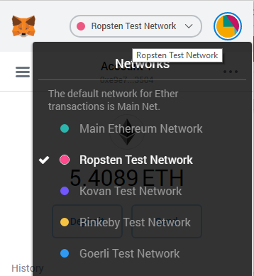
- Copy your public address on Ethereum
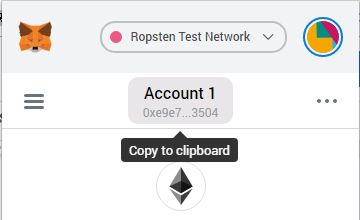
- Copy address and include it as the first entry into your lab notebook. This address must appear on screenshots for labs that appear in the rest of the lab notebook. Example in a Google Doc below:
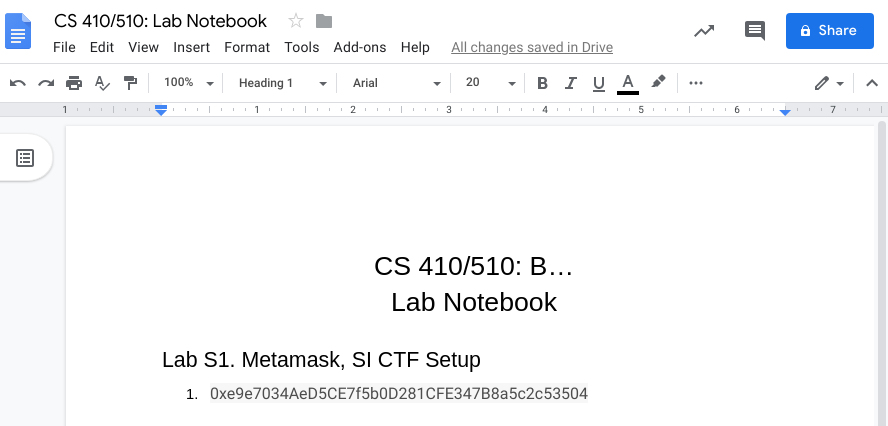
- For CS students, create a file in your git repository at
hw1/wallet.txtand copy the address into it. Commit and push it.
A faucet for the course can be found at: https://ropsten.oregonctf.org Enter in your address and ETH will be sent to you from the course's wallet at 0x36c12e07287d84651697ade6f2b72c3349efd7ae
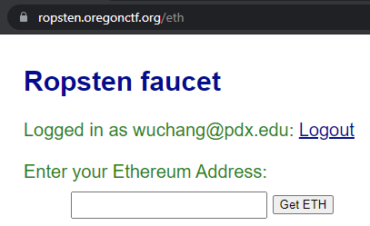
If the transaction fails due to insufficient funds in the wallet, notify the instructor.
A list of faucets can be found here. Some sources are also listed below:
Metamask faucet
- Visit https://faucet.metamask.io/, click "request 1 ether from faucet", then connect up your wallet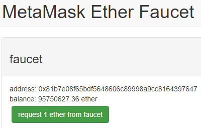
- Connect your wallet
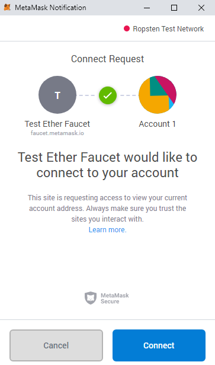 - See the transaction and your wallet address update in the UI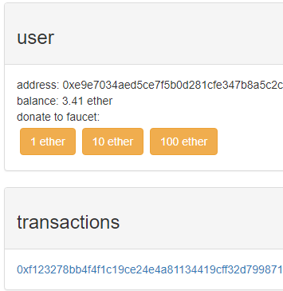
Dimensions faucet
- Visit https://faucet.dimensions.network/, enter your wallet address, and click Send. If working, the site issues 5 ETH.
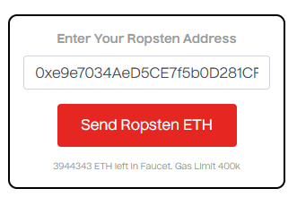
Moonborrow faucet
- Visit https://www.moonborrow.com/
- Login with your pdx.edu account and enter your wallet address to get ETH
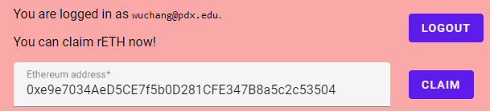
Egor's faucet
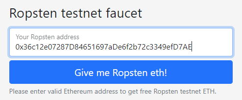
Bitaps faucet
- Visit https://teth.bitaps.com/ and enter your wallet address to get an ETH.
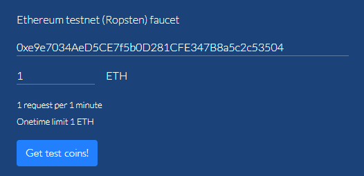
Belgian Ropsten faucet
- Visit http://faucet.ropsten.be and paste the public address of your wallet (as done previously for your lab notebook) into the form, then click on "Send me test Ether"
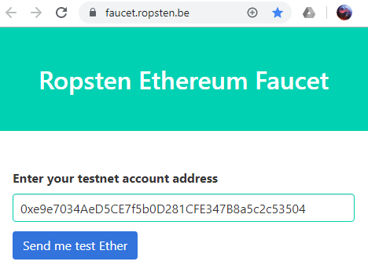
- If all goes well, you receive this message and an ETH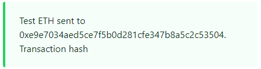
We will be playing levels from Security Innovation's Blockchain CTF in order to get practice navigating smart contracts and seeing how they can be exploited. To setup an account on the CTF, perform the following
- Go to https://blockchain-ctf.securityinnovation.com. The Web3.js embedded on this site will try to automatically interact with Metamask to bind the wallet account you have created to the site. To do so, it will prompt you to connect to your wallet account in Metamask. This will be the case for other Web3 apps (e.g. Remix, Ropsten faucets, etc.)
- In the pop-up you receive, click "Connect"
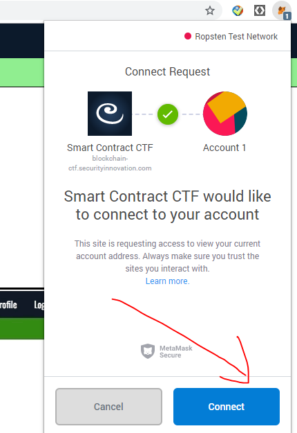
- On the site, click "Sign Up"
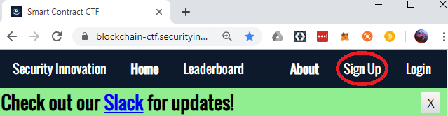
- Sign up a username using the quarter and the year of the course along with your OdinID. You may not receive credit for your work on the CTF without having an appropriately named account. For example, for Fall of 2019, I would create a username on the site
f19wuchang

- Confirm the transaction
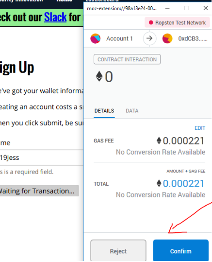
- Click on "Dashboard" to show the game levels. You will be using your ETH to seed and deploy a series of vulnerable smart contracts running on Ropsten that you will then exploit The amount of ETH you can get back from the smart contracts determines your CTF score. 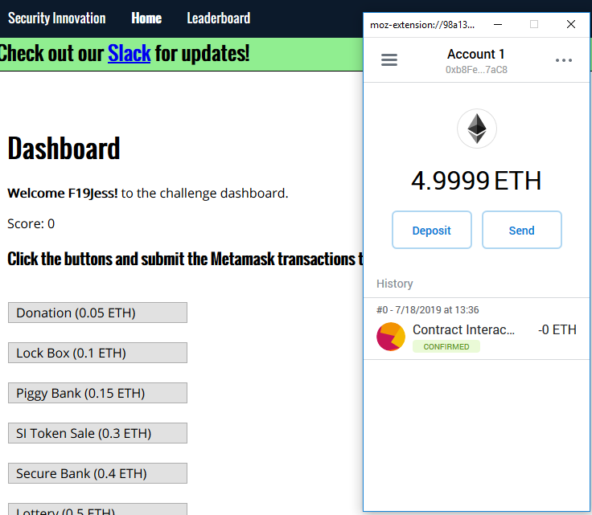
- Click "Login" if you need to return to dashboard if you've been signed out and need to reconnect your wallet to the site.
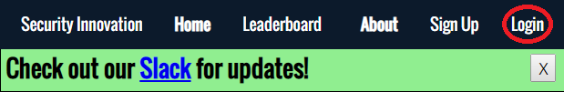
You are ready to perform the initial labs for the course (and are now one step closer to losing all of your ETH on the blockchain)! Celebrate (or not)! :)